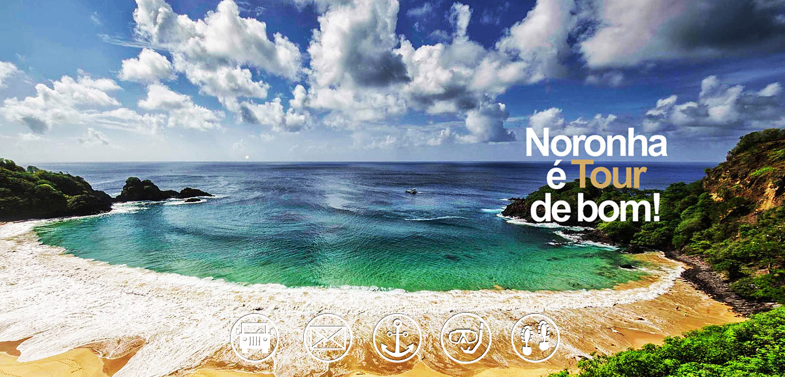

TRILHAS

Saiba mais sobre as trilhas que você pode curtir enquanto visita o paraíso de Fernando de Noronha!
RESTAURANTES
Conheça os melhores locais para grandes experiências gastronômicas em Fernando de Noronha.
INFORMAÇÕES ÚTEIS

Clique aqui e obtenha mais informações sobre a sua viagem a Fernando de Noronha e não esqueça nenhum detalhe!
PROJETOS AMBIENTAIS E ORGÃOS DE
CONSERVAÇÃO AMBIENTAL

Saiba mais sobre os projetos de Conservação Ambiental desenvolvidos na ilha e conheça o Orgão de Preservação Ambiental responsável pelo Arquipélago.